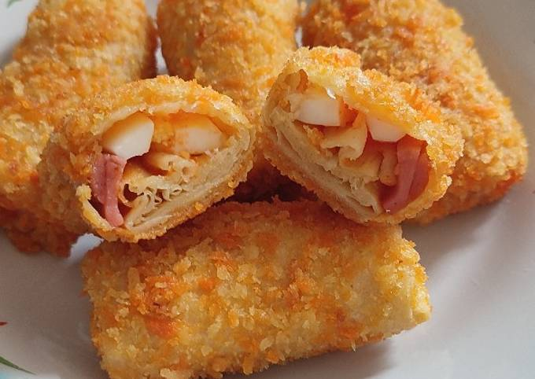
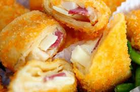

Selamat datang di Risollicious, destinasi utama Anda untuk menemukan
kelezatan risol yang tak tertandingi! Kami bangga mempersembahkan
koleksi risol berkualitas tinggi dengan berbagai varian yang memukau,
siap untuk memanjakan lidah Anda dan menghadirkan pengalaman kuliner
yang tak terlupakan.
Profil Risollicious
Selamat datang di Risollicious, tempat terbaik untuk menikmati risol
berkualitas tinggi dengan berbagai varian yang menggugah selera!
Kami dengan bangga menyajikan kreasi risol yang lezat dan inovatif
untuk memanjakan lidah Anda. Nikmati kelezatan risol mayo isi sosis
yang gurih, atau coba sensasi risol mayo isi smoked beef yang
nikmat. Setiap gigitan dijamin akan membawa Anda pada pengalaman
rasa yang tak terlupakan. Temukan risol favorit Anda hanya di
Risollicious!
Produk Risollicious
1. Risol Mayo Sosis

Rasakan kenikmatan sempurna dengan Risol Mayo Isi Sosis kami! Dibuat
dengan bahan-bahan berkualitas tinggi, risol ini memiliki kulit yang
renyah dan isian sosis lezat yang berpadu sempurna dengan mayo
creamy. Setiap gigitan menawarkan kombinasi rasa gurih dari sosis
dan kelembutan mayo yang bikin ketagihan. Pas untuk camilan di
rumah, bekal sekolah, atau menemani momen spesial Anda. Jangan
lewatkan kesempurnaan rasa yang satu ini – dijamin memanjakan lidah!
2. Risol Mayo Smoked Beef

Nikmati kelezatan Risol Mayo Isi Smoked Beef yang bikin nagih! Risol
dengan kulit renyah, diisi potongan smoked beef yang juicy dan saus
mayo yang creamy. Setiap gigitan menyajikan perpaduan sempurna
antara rasa gurih dan sedikit aroma asap yang khas dari daging,
ditambah kelembutan mayo yang meleleh di mulut. Ideal untuk camilan
di rumah, bekal sekolah, atau menemani momen spesial Anda. Pastikan
Anda mencoba dan rasakan sendiri kenikmatannya!
No.
Risollicious
Harga / -paket (5pcs)
1.
Risol Mayo Sosis
Rp10.000,00
2.
Risol Mayo Smoked Beef
Rp15.000,00
Pemesanan Risollicious
Bagaimana Cara Memesan? Pesan risol favorit Anda sekarang melalui
platform toko online kami yang mudah digunakan. Cukup pilih varian
risol yang Anda inginkan, tentukan jumlah pesanan, dan klik tombol
Beli Sekarang.
Kami akan segera mengirimkan pesanan Anda dengan aman dan cepat ke
alamat yang Anda tentukan.
Dokumentasi Risollicious
Ayo Segera Temukan Risol Berkualitas Tinggi dari Risollicious!